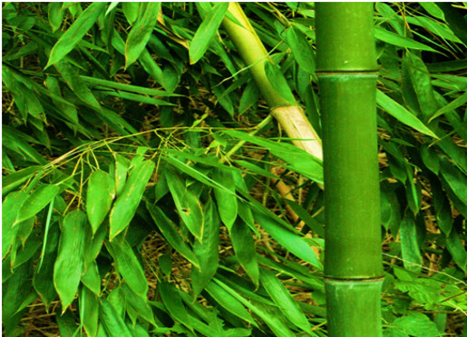

Overview of Vamsha
Basonym of Drug: Vamsha
Main Synonym: Twaksara, Karmara, Trunadhwaja, Shataparva, Yavaphala, Venu, Mascara, Tejana
Regional Name
- Gujarati: Vamsha
- Bengali: Vamsha
- Hindi: Bansha
- Marathi: Bambu
- Tamil: Mungila
- Telugu: Bedaru, Bonga
- English: Bamboo
Botanical Information
Botanical Name: Bambusa bambos Willd
Family: Gramineae
Classification (Gana):
- Bhavprakash Nighantu: Guduchyadi Varga
- Kaiyadeva Nighantu: Aushadhi Varga
- Raja Nighantu: Mulakadi and Pippalyadi Varga
External Morphology
A big perennial shrub
Useful Parts
Silica/Manna
Important Phytoconstituents
- Fucosterol
- Methylanthraquinones
- Riboflavin
- Calcium
- Albuminosides
Rasa Panchak
- Rasa: Madhura, Kashaya
- Guna: Laghu, Ruksha
- Virya: Shita
- Vipaka: Madhura
Action
Kaphapittahara
Therapeutic Indication
- Mutrajanana (Diuretic)
- Stanyajanana (Galactagogue)
- Ashmarighna (Lithotriptic)
- Trishnahara (Reduces excessive thirst)
- Pramehahara (Anti-diabetic)
- Kusthaghna (Treat skin diseases)
Therapeutic Uses
- Anartava - Decoction of Vamsha nodes, and Shatapushpa with jaggery are beneficial in amenorrhea.
- Krumi - Decoction of leaves is beneficial for intestinal worms.
- Vrana - Paste of leaves is beneficial externally for rapid wound healing.
Dose
- Root powder: 3-6 gm
- Decoction: 50-100 ml
Formulations
- Pugakhanda
- Dadimastaka Churna
Adverse Effect
Not Known